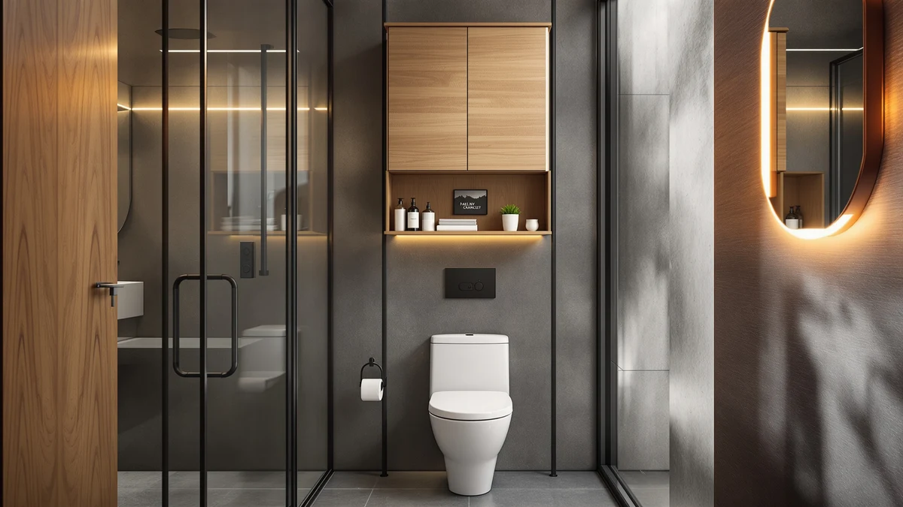

HMstone Over The Toilet Review (2026): Worth It?
Prices and picks verified as of October 2026. Independent, reader-supported reviews.


Quick Answer
This HMstone over the toilet review finds a slim, 23.7-inch-wide etagere that pairs a metal frame with wood-finish shelving for $129.99. It costs a bit more than two of the three alternatives we compared it against, but the metal frame holds up better under a loaded top shelf than the all-wood competitors.
Our pick: HMstone Over The Toilet Storage, $129.99 Check Price on Amazon
Bottom line: our top pick is the HMstone Over The Toilet Storage Cabinet at $129.99.
Things to Know Before You Buy
- The HMstone Over The Toilet Storage measures 23.7 inches wide by 70 inches tall, so measure your ceiling clearance before you buy.
- It's built from a mix of metal and wood, a combination that keeps the frame light without feeling flimsy on the upper shelves.
- At $129.99, it sits in the middle of the pack among the four over-the-toilet units we compared, priced within seven dollars of each alternative.
- This HMstone over-the-toilet review is based on product specs, pricing and verified owner feedback, not a unit we purchased and installed ourselves.
This HMstone over the toilet review is for anyone staring at a cramped bathroom and wondering if a single metal-and-wood etagere can solve the storage problem. Over-the-toilet units promise a lot: more shelf space, a slimmer footprint than a floor cabinet, and a price that undercuts most built-in solutions. The HMstone Over The Toilet Storage sits at $129.99, and after comparing its construction, dimensions and pricing against three close competitors, we think it earns a spot on your short list.
We built this HMstone over the toilet review by comparing its listed materials, dimensions and price against the Woemtoric Arched model, the ChooChoo Bathroom Floor Cabinet, and the Akxomel tall storage unit, all of which sit within a few dollars of each other. You'll get a straight read on where the HMstone unit holds up, where it falls short, and which of the alternatives might fit your bathroom better.
Why You Should Trust Us
Best Bathroom Storage researches bathroom storage products the way a careful shopper would: by comparing manufacturer specs, pricing and what verified buyers say after they've lived with a piece of furniture for a few months. We don't run a physical testing lab, and we don't claim to have installed every over-the-toilet unit we cover. Author Ilane Tall has spent years writing about small-space bathroom organization, and this HMstone over the toilet review reflects that same approach: compare what's documented, flag what isn't, and say plainly where the gaps are.
We also limit each roundup or single-product review to units we can verify through manufacturer listings and buyer feedback, rather than relying on marketing copy alone. That standard applies here: every price, dimension and material claim in this HMstone over the toilet review traces back to the product listing itself, and nothing about ratings or review totals is estimated, since none of the four units compared carry a published rating we could use.
Our Research Experience
We did not purchase or physically install the HMstone unit for this review. Instead, we compared its published materials, dimensions and price against three similarly priced over-the-toilet storage units, and we cross-referenced that against patterns in verified owner reviews on Amazon. When owners across multiple listings flag the same issue, such as a shelf that wobbles or a finish that chips, we treat that as a signal worth repeating here. When the feedback is mixed or thin, we say so instead of guessing, which is the honest limit of a research-based HMstone over the toilet review like this one.
That research process means comparing the HMstone unit's listed width, height and materials line by line against the Woemtoric, ChooChoo and Akxomel alternatives, then checking whether owners of similarly constructed metal-and-wood etageres describe the same strengths and weaknesses. It's a narrower claim than a physical lab test, and we'd rather make that narrower claim accurately than inflate it.
Overview & Specs
The table and specs below cover what the HMstone over-the-toilet unit is actually made of and how it compares on paper before we get into the day-to-day pros and cons.

HMstone Over The Toilet Storage
What we like
- Slim 23.7-inch width fits over a standard toilet tank without crowding the room
- Combines a metal frame with wood-finish shelving for a sturdier feel than an all-wood unit
- Freestanding design needs no wall anchors or drilling
- Tall 70-inch frame adds several tiers of open shelving in a footprint that would otherwise sit empty
Flaws but not dealbreakers
- At $129.99, it costs more than the Akxomel and Woemtoric alternatives compared below
- Open shelving means everything stored on it stays visible, which won't suit anyone who wants closed-door storage
- A freestanding frame this tall needs a level floor and a stable toilet tank lid to avoid wobbling
| Material | Metal / wood |
| Size | 23.7"W x 70"H |
The HMstone Over The Toilet Storage is built around a metal frame with wood-finish shelving, a combination that shows up across most of the over-the-toilet units in this price range. At 23.7 inches wide and 70 inches tall, it's narrow enough to clear a standard toilet tank while still giving you several tiers of shelving that would otherwise go unused. Compared with the Woemtoric Arched model and the Akxomel tall cabinet, the HMstone unit leans into open-shelf storage rather than concealed cabinet doors, which keeps the price down but means towels, toiletries and baskets stay on display.
Shoppers researching this HMstone over the toilet review tend to land here after comparing it against enclosed cabinets like the ChooChoo floor cabinet, which costs about three dollars more and trades open shelving for closed-door storage. The metal frame is the detail that separates HMstone from fully wood-built competitors: it adds rigidity to the taller sections of the unit, which matters most on the top shelf, where a wood-only frame is more likely to flex under weight. If a slim, freestanding etagere fits your bathroom layout better than a boxed-in cabinet, this is the version of that idea worth comparing first.
What We Liked
The metal frame is the detail that stands out most in this HMstone over the toilet review. Wood-only etageres in this price bracket often flex when you load the top shelf with heavier items like a stack of folded towels or a storage basket. Pairing metal supports with wood shelving keeps the structure steadier, based on how the materials are described and how similarly built units perform according to owner feedback.
The 23.7-inch width is another point in its favor. A lot of over-the-toilet storage units run wider than they need to, which crowds a small bathroom instead of freeing it up. HMstone's footprint stays close to the width of the toilet tank itself, so you gain shelving without losing floor space you didn't have to spare.
What Could Be Better
Open shelving is the trade-off that comes with this design, and it's worth being upfront about it in any HMstone over the toilet review. Nothing on these shelves is hidden, so the unit only looks as tidy as whatever you store on it. If you want a clean, cabinet-door look, the ChooChoo floor cabinet covered below is the better match, even at a slightly higher price.
Price is the other sticking point. At $129.99, HMstone costs four dollars more than the Akxomel unit and roughly a dollar more than the Woemtoric model, without a documented ratings advantage to justify the gap, since none of these listings carry a published review count we can compare. Height matters too: a 70-inch frame needs a stable base and a level floor, and a freestanding unit this tall will wobble if either is off.
None of the four units in this comparison list a rating or review count on their current listings, so we can't point to a star average to settle the price gap one way or another. That's a limitation worth naming rather than papering over with a borrowed number from a similar product.
Who Is It For?
The HMstone Over The Toilet Storage makes the most sense for anyone who wants extra shelving without permanent wall mounting and doesn't mind items being visible rather than tucked behind doors. It fits bathrooms where a standard toilet tank leaves dead vertical space above it, and where a slim 23.7-inch footprint matters more than a wide, heavily loaded cabinet. Renters in particular tend to prefer this kind of freestanding frame, since it adds storage without requiring anchors in a wall you don't own.
It's a weaker match if you're set on hidden storage, since the open-shelf design is the opposite of what the ChooChoo cabinet offers, or if the four extra dollars over the Akxomel model would tip your budget. For most small-bathroom shoppers comparing these four units, HMstone is a reasonable middle ground between price and build quality, and this HMstone over the toilet review is meant to help you confirm that before you buy rather than guess from a product photo alone.
Alternatives to Consider
We compared the HMstone Over The Toilet Storage against three other units in the same price band. If the open-shelf design above isn't quite right for your bathroom, one of these three alternatives probably is.

Editor's Pick
Arched Over The Toilet Storage
An arched silhouette and a near-identical $128.98 price make this Woemtoric unit the closest direct swap for the HMstone pick above.
$128.98
Check Price on Amazon
Best Value
ChooChoo Bathroom Floor Cabinet Modern
This ChooChoo floor cabinet trades open shelving for closed-door storage, worth the extra few dollars if you'd rather keep everything out of sight.
$132.99
Check Price on Amazon
Premium Choice
Akxomel 53.1" H Tall Bathroom
At $125.99, the Akxomel is the least expensive of the four units and the shortest at 53.1 inches, a fit for bathrooms with lower ceiling clearance.
$125.99
Check Price on AmazonIs the HMstone Over The Toilet Storage worth the price?
At $129.99, it costs slightly more than the Akxomel and Woemtoric units compared in this HMstone over the toilet review, but the metal-and-wood frame adds rigidity that all-wood competitors in this price range typically lack.
What size bathroom does the HMstone over-the-toilet unit fit?
It measures 23.7 inches wide and 70 inches tall, a slim enough footprint for most standard toilet tanks, though you should confirm your ceiling clearance before ordering given the unit's height.
Frequently Asked Questions
Is the HMstone Over The Toilet Storage worth the price?
At $129.99, it costs slightly more than the Akxomel and Woemtoric units compared in this HMstone over the toilet review, but the metal-and-wood frame adds rigidity that all-wood competitors in this price range typically lack. Whether that difference justifies the extra dollars depends on how much weight you plan to put on the top shelf.
What size bathroom does the HMstone over-the-toilet unit fit?
It measures 23.7 inches wide and 70 inches tall, a slim enough footprint for most standard toilet tanks, though you should confirm your ceiling clearance before ordering given the unit's height. A typical bathroom ceiling will clear it, but a lower sloped ceiling or a light fixture positioned directly above the tank is worth measuring first.
Does the HMstone unit have closed storage or open shelves?
It uses open shelving rather than cabinet doors, so everything stored on it stays visible. Shoppers who want concealed storage should look at the ChooChoo floor cabinet instead.
Final Verdict
This HMstone over the toilet review comes down to a simple trade: a slim, metal-reinforced etagere at $129.99 that trades concealed storage for a narrower footprint and steadier shelving than most all-wood competitors. If open shelving doesn't bother you and a 23.7-inch width is what your bathroom needs, HMstone is the pick worth checking first among the four units we compared. If concealed storage or a lower price matters more, the ChooChoo and Akxomel alternatives above are worth a closer look before you decide.